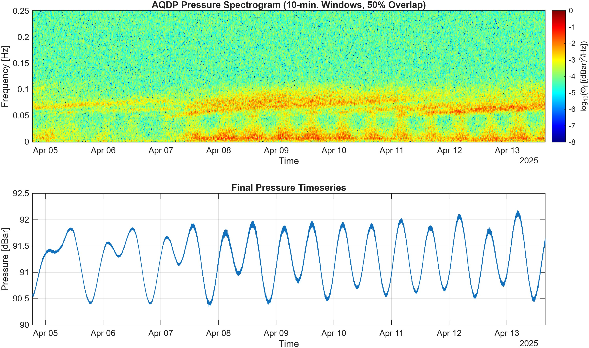
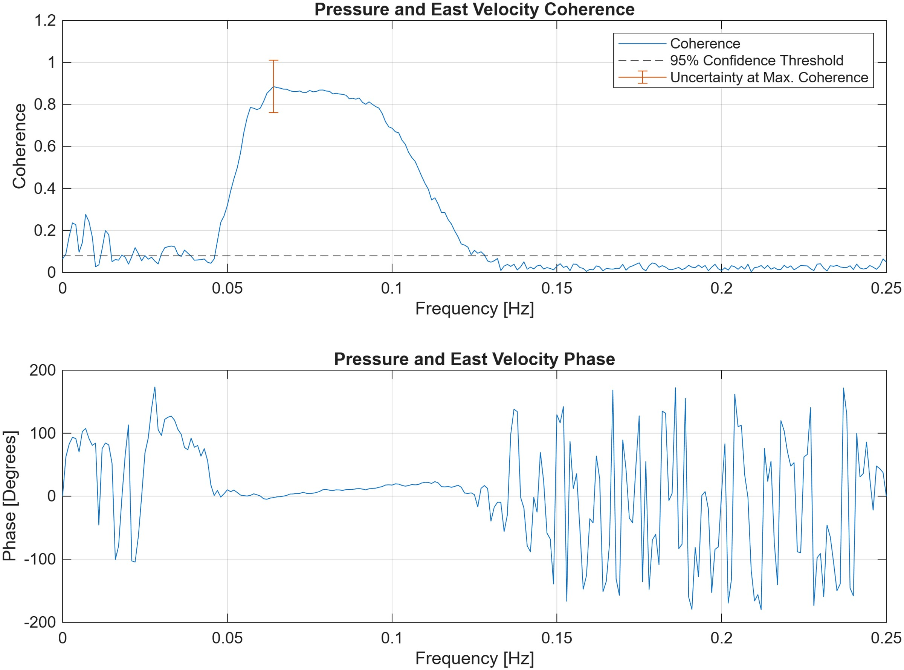
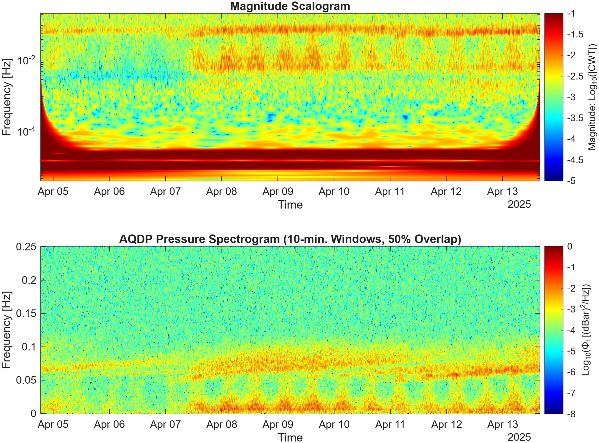
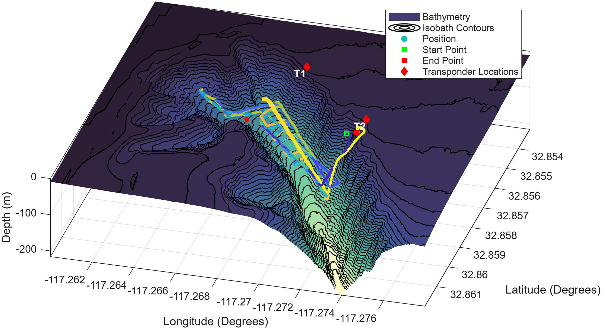
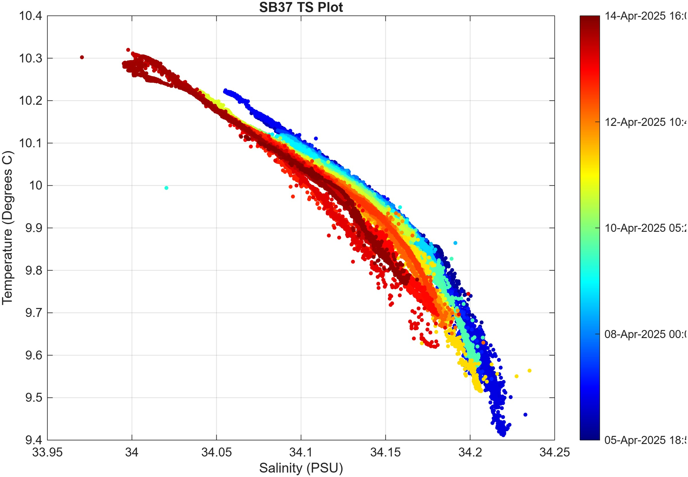
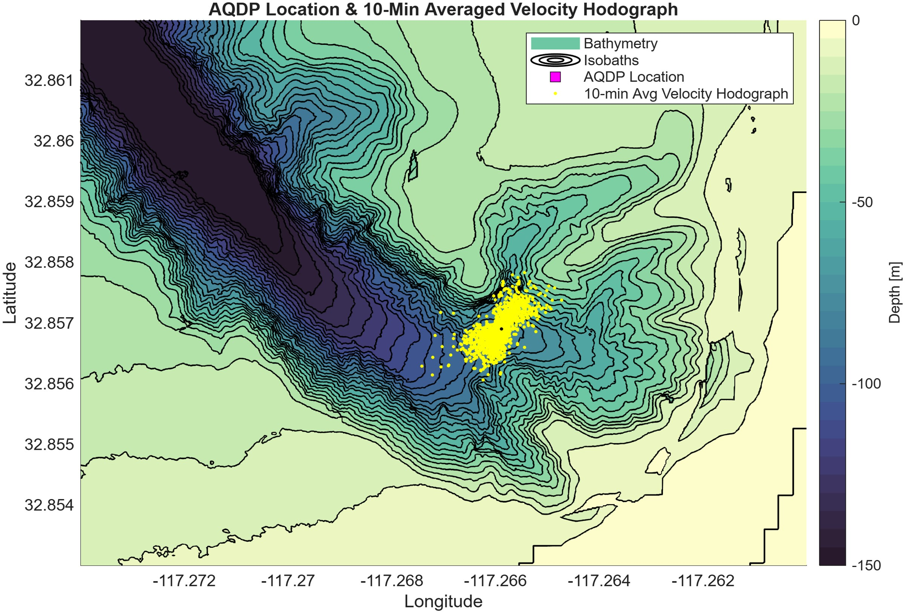
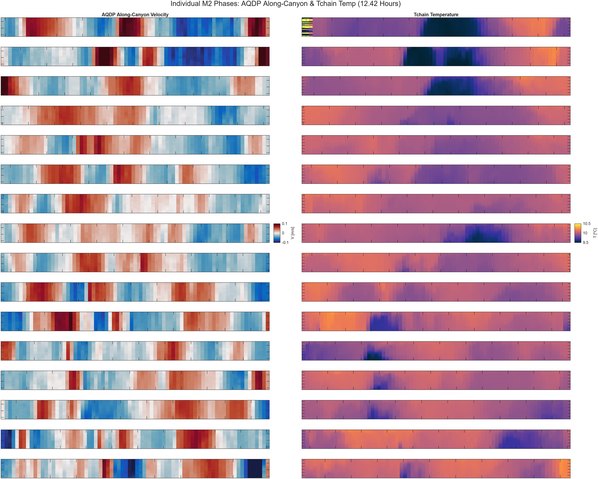
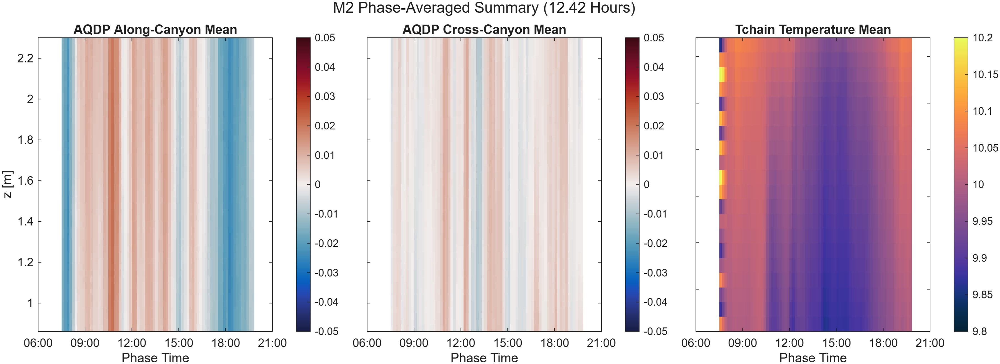
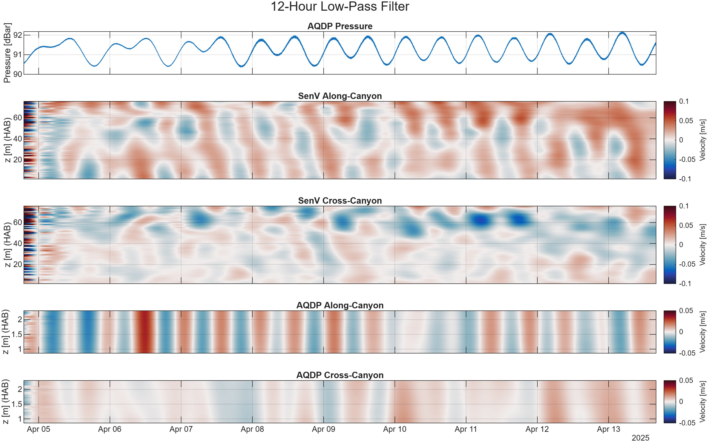

Oceanographic Data Visualization
The goal for this section is to be more or less a catalog of how I visualize data. It combines both my undergraduate and graduate research experience, some of the information is the same as the two respective pages, but a lot of it is new. Each figure will come with a short description to provide context, but not in-depth explanations. See the links below to jump straight to specific figures.
Table of Contents
- ADCP Summary: Pressure, Velocity, Temperature
- Temperature Sensor Chain Summary: Temperature & Stratification
- Velocity Spectra
- Pressure & Temperature Spectra
- Turbulent Temperature Overturns
- Velocity & Temperature Relationships during Bore Events
- Turbulent Dissipation Events
- Turbulent Dissipation Method Comparison
- Deployed Instrument Localization
- Pressure Spectrogram
- Coherence & Phase
- Pressure Scalogram
- Autonomous Underwater Vehicle Position Map
- CTD: Temperature-Salinity Plot
- Hodograph
- Underwater Canyon Flow Animation
- Phase Averaging
- Low-Pass Filtering
- Flow Direction Animation
Environmental Fluid Dynamics
ADCP Summary: Pressure, Velocity, Temperature

Pressure, temperature, and directional velocity components from an Acoustic Doppler Current Profiler (ADCP). The ADCP, a Nortek Aquadopp, was deployed for 8 days at the bottom of a submarine canyon in La Jolla, CA. It was moored to lander and measured velocity in the bottom 2 meters of the water column in 90 meters of depth.

Pressure, temperature, and directional velocity components from a different ADCP, an RDI SentinelV. This ADCP was deployed at the same mission as the Aquadopp but measured nearly the whole water column.
Temperature Sensor Chain Summary: Temperature & Stratification

Temperature, stratification, and depth-averaged temperature signals from a deployment in La Jolla CA. Twenty Seabird 56 temperature sensors, or thermistors, were attached on a line to measure vertical changes in temperature over time. The string measured the bottom 12 meters of a submarine canyon in 90 meters depth for 8 days. Using a co-deployed CTD for salinity data, and an equation of state, the stratification is also found. The bottommost plot is the depth-averaged temperature signal.

Temperature, stratification, and depth-averaged temperature signals over a cold bore event.
Velocity Spectra

Velocity spectra from the ADCP deployments, A one-day time window is used with 50% overlap to realize tidal frequencies. Tidal frequencies are apparent, as well as the surface wave band (3-30 second period waves)
Pressure & Temperature Spectra

Spectra of pressure and temperature from an ADCP. In the pressure spectrum, diurnal, semidiurnal, internal wave, infra-gravity wave, and surface gravity wave energy is all visible.
Turbulent Temperature Overturns


Examples of temperature overturns. These occur when turbulent eddies roll through a region and invert the temperature profile. They can appear to be breaking waves in some conditions, despite occurring at the bottom of the ocean. Color scales are adjusted to show contrast in differing mean temperature conditions.
Velocity & Temperature Relationships during Bore Events

It can be helpful to remap velocity from vertical coordinate to a temperature coordinate. This plot shows a submarine canyon oriented perpendicular to a coastline. As water flows up-canyon (towards shore, red color), it brings cold water with it, lowering the temperature at the sensor location. On the flip side, when water flows down-canyon, it brings warm water from the shore with it, raising the temperature. The bottom subplot shows the dissipation of temperature variance, which is a measure of how rapidly temperature changes are being smoothed out. These typically happen closer to rapid temperature changes and changes in velocity.
Turbulent Dissipation Events

This figure shows how a turbulent event affects other oceanographic variables. The top subplot shows how strong the ocean is being mixed, due to the onset of a cold bore event. The second subplot shows the stratification, which is a barrier to turbulence. The third shows the temperature, which clearly shows a drop when the bore rolls through. The fourth shows the along-canyon velocity, showing the bore being pushed towards shore from deeper waters. The final subplot shows the acoustic backscatter amplitude, showing lots of mass being carried by the cold bore.
Turbulent Dissipation Method Comparison

The results of turbulent dissipation for a cold bore event. Four different methods, using a combination of velocity and temperature data measure the strength of turbulence. During the cold bore, the four methods agree, in other areas they don't. This is likely due to the sensors being in slightly separate locations, difference in vertical and temporal resolution, and differences in data quality control.
Deployed Instrument Localization

After instruments are deployed into the ocean, their exact location is unknown. To approximately locate them, the ship will ping the instrument and receive a response. The time difference between sending the ping and receiving the response gives a sphere of potential locations. Obviously many of these positions are not possible (like being out of the water), so it can eb reduced to roughly a circle of positions on the seafloor. Using multiple pings, alongside a known ship position, will give the approximate location.

Chosen approximate locations of the two moored sensor arrays.
Pressure Spectrogram
{kind=link}

A spectrogram of an ADCP pressure signal. 10 minute windows with 50% overlap are used to resolve surface gravity wave and infragravity wave energy. Surface gravity waves arrive between 0.05-0.1Hz, with shorter frequencies (longer wavelengths) arriving first due to deep/long wave propagation. Multiple swells are present and compound on each other. Infragravity wave energy appears below 0.05Hz and appears to be forced by semidiurnal tides, as it is only significantly present in the second half of the timeseries.
Coherence & Phase
{kind=link}

Coherence and phase relationship between pressure and velocity data in the ocean. The goal here is to analyze the effects of surface waves on velocity data. We can see in the plot that within the surface gravity wave frequency band, there is very strong coherence and an in-phase relationship. This shows that surface waves greatly influence the velocities in one of the cardinal directions, even when the velocity is measured at 90 meters depth.
Pressure Scalogram
{kind=link}

The scalogram is made from the continuous wavelet transform (CWT). The CWT is similar to a spectrogram, but instead of comparing a signal to different frequencies, it compares it to different scaled wavelets. The wavelets vary in frequency and time, which allows for high temporal resolution compared to the spectrogram. In the scalogram, we can see surface gravity and infragravity wave energy similar to the spectrogram. We can see internal wave energy below infragravity waves, and diurnal and semidiurnal tidal frequencies at the bottom. The curves on the bottom left and right are a non-physical artifact of the CWT.
Autonomous Underwater Vehicle Position Map
{kind=link}

A figure showing the position a Remus 100 underwater autonomous vehicle deployed in a submarine canyon. The color of the points indicates time, where brighter colors are closer to the start of the deployment and darker are closer to the end. T1 and T2 are transponder locations used for the Remus 100 to ping for position.
CTD: Temperature-Salinity Plot
{kind=link}

This figure shows the temperature salinity relationship measured from a conductivity, temperature, and depth sensor placed at the bottom of a submarine canyon in La Jolla, CA. The color indicates time, showing how the relationship varies over the course of an eight-day deployment. This relationship is used to map the two variables together and infer others like density.
Hodograph
{kind=link}

The hodograph is a tool to visualize flow direction. It takes two velocity components, north and east, and plots them against each other to look for dominant flow patterns. If we overlay the hodograph over the geometry constraining the flow, it is easier. In this figure, the hodograph of velocity data at the bottom of a submarine canyon is shown, and it is apparent that the flow is following the main direction of the canyon (thalweg) and smaller tributary canyons.
Underwater Canyon Flow Animation
Flow in an underwater canyon can be hard to visualize, this video aims to provide some clarity. The velocity signal is only provided at one location in this mission, so I can't truly integrate a velocity field and get particle positions. Instead, I simply release a particle at a time, and assume it feels the velocity measured at the sensor location despite not being at that location. Then, I keep the particle alive for a certain amount of time so that there are no non-physical results. Particles are released on regular intervals. The temperature signal in the canyon is also plotted, and it shows particles pushed up-canyon when cold bores roll through (cold temperature spikes). We can also see preferred directions of the flow in specific canyon tributaries.
Phase Averaging
{kind=link}

Applying a fourth-order Butterworth low-pass filter can be used to extract long-term trends from data. In this example, a 12-hour filter was used on two sets of ADCP velocity data. The velocity has been rotated into it's on and off-axis components, to show the primary direction. There are some patterns visible in velocity, as it alternates from up to down canyon.
{kind=link}

Performing a vertical average of the phase stack from above yields the actual phase average. In this case, there are no strong patterns in the semidiurnal signal, so the phase average is messy.
Low-Pass Filtering
{kind=link}

Phase averaging is a technique used to visually search for patterns that exist over tidal phases. The method involves separating data into phases, such as the M2 semidiurnal phase, and stacking the chunks on top of each other. Those individual phases are shown here. There aren't many obvious patterns due to flow complexity, but there is an up-canyon flow seen towards the end of the bottom half of the velocity plots, and some structure in the temperature plot.
Flow Direction Animation
The flow direction animation is a simple visualization of where water is going at the bottom of an underwater canyon. The arrow points in the horizontal flow direction, vertical velocity is neglected because it is much weaker. The size of the vector indicates the magnitude of the velocity. A timeseries of pressure with a slider shows what phase of the tide is current.
Acoustic Spectrum

A spectrum of acoustic timeseries data recorded at the bottom of the ocean at a site in the Canadian Arctic. This spectrum is unique because it is tainted with harmonics of 1Hz pulses, as seen in the right zoom-in image.
Acoustic Spectrogram
The following are examples of acoustic signals recorded at the bottom of the ocean. The signals are typically in the 10-1000Hz range, and can be from marine mammals, ships, or other sources. The spectrograms show how the frequency content of the signal changes over time.

90-30 and 50-30 Hz downsweeps, up to 2 seconds long, typically associated with sei whales.

Humpback whale songs, typically in the 100-1500 Hz range.

Seismic surveys are short pulses under 50Hz, on nearly perfect intervals. Bands of noise between 50-100Hz are created by electronics on the hydrophone array and block real signals.

Flow noise created by strong currents interacting with the hydrophone.

Extreme noise from ships.

Upsweep and downsweep signals from marine mammals.

Strumming signals, which are large high intensity pulses. These are made when the mooring line that the hydrophone is attached to oscillates in high currents and physically hits the hydrophone.
Acoustic Signal Detection Algorithm

An acoustic signal detection algorithm that uses the Generalized Power Law Detector to locate high energy signals. The original spectrogram is in the top subplot, the energy summation use for locating signals is in the middle, and the detected signals are at the bottom.
Acoustic Signal Review UI

A UI that I developed to batch-review manually flagged signals from an acoustic timeseries. The UI is not made from buttons and sliders, rather it is just hotkeys for rapid reviewing. Users go through and pair what detections they are interested in to what the automatic detector finds. Special cases are supported, such as if the detector misses part of the true call, or if the detection cannot be identified. All hotkey inputs are immediately visualized onto the screen, and working at full force, a user can review thousands of acoustic signals per day.
Acoustic & Kinematic Analysis

Tests were conducted on a hydrophone mooring setup to analyze noise when the hydrophone is tapped or shaken. This figure shows one of tests, where the hydrophone prototype was shaken. Cameras were used to track relative motion of the hydrophone to its frame, those displacements are displayed in the figure. We can see that when large displacements occur, large pulses appear in the acoustic data.
Contact & Resume
- Resume: View / Download Resume (PDF)
- LinkedIn: LinkedIn Profile
- Email: icosgrove010@gmail.com
- GitHub: GitHub Profile